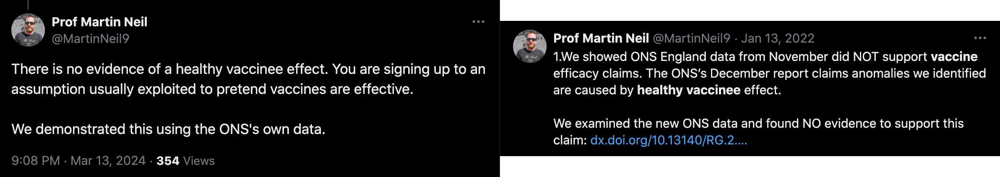
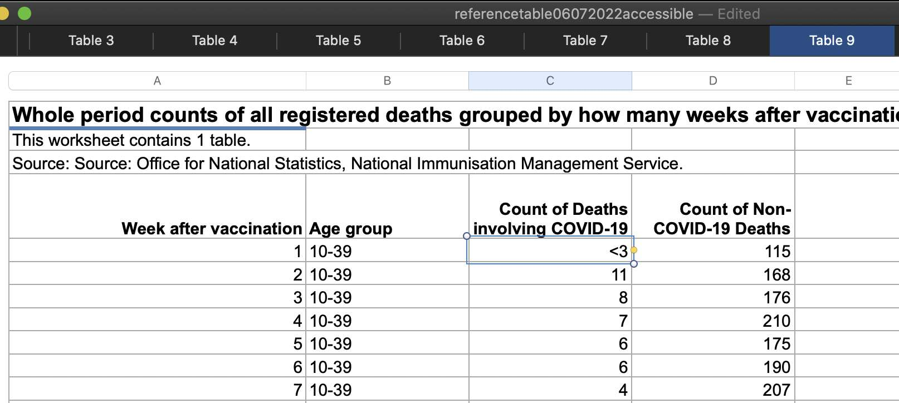
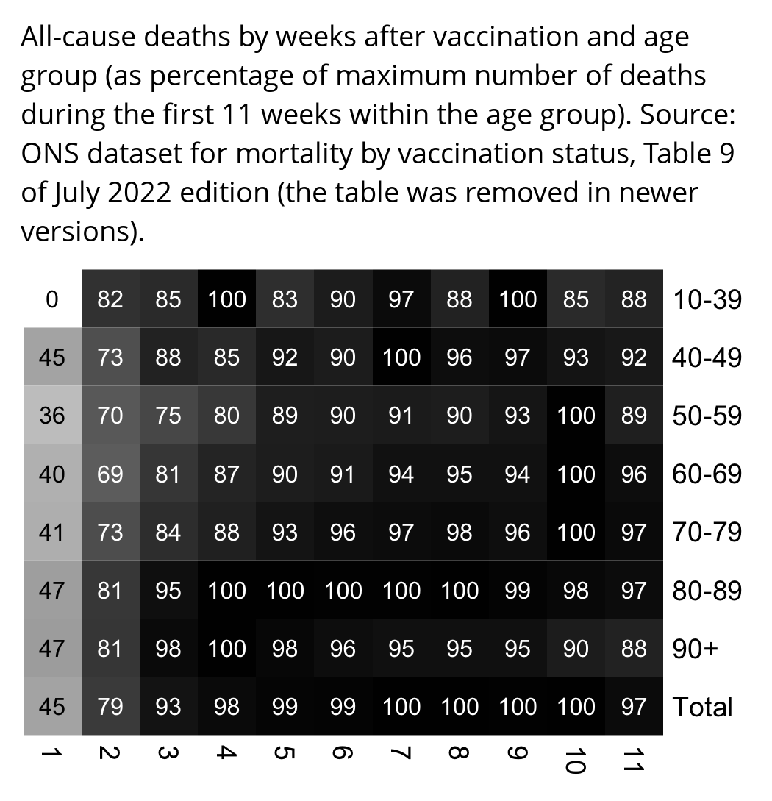

Martin Neil claims that there is no evidence for the healthy vaccinee effect:

In old versions of the ONS dataset for mortality by vaccination status, there was a table which showed the number of COVID and non-COVID deaths by weeks after vaccination and age group:

It has a much lower number of deaths in the first three weeks after vaccination than in subsequent weeks:

I didn't find information if the table includes all doses or only the last dose before death. The table is also confounded by seasonal variation in mortality, and many people got the first dose in early 2021 in the middle of a COVID wave, which might elevate their mortality during the first weeks after vaccination compared to later weeks.
library(colorspace)
t=read.csv("http://sars2.net/f/ons-table-9-deaths-by-weeks-after-vaccination.csv",na.strings="<3")
t=t[t$week!="12+",]
t$week=as.numeric(t$week)
m=xtabs(covid+noncovid~age+week,t)
m=rbind(m,Total=colSums(m))
m=m/apply(m,1,max)
disp=round(m)
exp=1.5
pal=colorRampPalette(hex(HSV(c(210,210,210,160,110,60,30,0,0,0),c(0,.25,rep(.5,8)),c(rep(1,8),.5,0))))(256)
pal=sapply(seq(1,0,,256),\(i)rgb(i,i,i))
pheatmap::pheatmap(m^exp,filename=paste0("0.png"),display_numbers=disp,
cluster_rows=F,cluster_cols=F,legend=F,cellwidth=19,cellheight=19,fontsize=9,fontsize_number=7.8,
border_color=NA,na_col="gray90",number_color=ifelse(m^exp>1^exp*.45,"white","black"),
breaks=seq(0,1^exp,,256),pal)
system("w=`identify -format %w 0.png`;convert 0.png -gravity northwest \\( -splice x16 -size $[w-44]x -pointsize 38 caption:'All-cause deaths by weeks after vaccination and age group (as percentage of maximum number of deaths during the first 11 weeks within the age group). Source: ONS dataset for mortality by vaccination status, Table 9 of July 2022 edition (the table was removed in newer versions).' -extent $[w-44]x -gravity center \\) +swap -append -bordercolor white -border 6 +repage 1.png")
Clare Craig was included as a coauthor in some of the papers by Neil and Fenton et al., but in response to a plot of NZ data where unvaccinated people had a spike in deaths during the rollout of the first dose, she said: "This all looks much like the ONS - the dying left behind with a small denominator causing illusion of peak in unvaccinated mortality with rollout." [https://twitter.com/ClareCraigPath/status/1771229635692335293] So she seems to have suggested that the spike in unvaccinated deaths in the ONS data could be attributed to temporal HVE.
People in Substack comments rarely address any specific details related to the topic of the post, and even if the author makes some obvious error, it's rare for people in the comments to mention it (or if they do then they just get banned like me). But last year when Neil and Fenton published a Substack post where they did a model where they only applied the cheap trick to the numerator and not the denominator, even people in their Substack comments were calling them out for it (https://wherearethenumbers.substack.com/p/the-illusion-of-vaccine-efficacy/comments):
In March 2024, Martin Neil, Norman Fenton, and Scott McLachlan published a preprint titled "The extent and impact of vaccine status miscategorisation on covid-19 vaccine efficacy studies": https://www.medrxiv.org/content/10.1101/2024.03.09.24304015v1.full.pdf.
The abstract said: "Systematic review identified thirty-nine studies that suffered from one particular and serious form of bias called miscategorisation bias, whereby study participants who have been vaccinated are categorised as unvaccinated up to and until some arbitrarily defined time after vaccination occurred. Simulation demonstrates that this miscategorisation bias artificially boosts vaccine efficacy and infection rates even when a vaccine has zero or negative efficacy. Furthermore, simulation demonstrates that repeated boosters, given every few months, are needed to maintain this misleading impression of efficacy. Given this, any claims of Covid-19 vaccine efficacy based on these studies are likely to be a statistical illusion."
Note how they relied on a simulation to demonstrate that the cheap trick would increase vaccine efficacy.
The methodology they used to do the simulations was poorly described, because for example they didn't mention that they only applied the cheap trick to the numerator but not the denominator, and they didn't explain which number of new vaccine doses they simulated on each day or week of the simulation. And they didn't even explain why unvaccinated people only had one line even though there should've been three different lines that would've corresponded to each vaccinated line. And at first I even thought that the weeks in their simulation were weeks since vaccination, but actually they were weeks of the simulation instead:

For example in scenario A, the vaccine was a placebo which had no effect on the infection rate, and all people had a 1% constant infection rate regardless of whether they were vaccinated or not. So I thought that if people would be classified as unvaccinated for 1-3 weeks after vaccination, both unvaccinated and vaccinated people should still have a constant infection rate. But I only understood how scenario A worked after Uncle John Returns posted this tweet: [https://x.com/UncleJo46902375/status/1770085722550133215]
I've simulated Fenton's simulation. I've only shown the 1 week unvaccinated line (to hit 1% in week 7). You can get almost any shape you like by adjusting the vaccinations per week. Curves smoothed by Excel.
I reproduced Uncle John's plot without smoothing, but I also added lines for unvaccinated people in the scenarios where people were considered as unvaccinated for 2 or 3 weeks after vaccination:

library(ggplot2)
weeks=11
vax=cumsum(c(10,190,360,200,70,20,rep(0,5)))
lv=c("No lag","1 week","2 weeks","3 weeks")
lag=factor(rep(lv,each=weeks),lv)
lagged=embed(c(rep(0,3),vax),4)
xy=data.frame(x=1:weeks,y=c(1000-lagged)/c(1000-vax),lag,status="Unvaccinated")
xy=rbind(xy,data.frame(x=1:weeks,y=c(lagged)/vax,lag,status="Vaccinated"))
# xy=data.frame(x=1:weeks,y=1,lag,status="Unvaccinated")
# xy=rbind(xy,data.frame(x=1:weeks,y=1,lag,status="Vaccinated"))
xstart=1;xend=weeks;ystart=0;yend=5
pal=c("black",hcl(c(200,250,330)+15,100,50))
ggplot(xy,aes(x,y))+
geom_hline(yintercept=c(ystart,yend),linewidth=.3,lineend="square")+
geom_vline(xintercept=c(xstart,xend),linewidth=.3,lineend="square")+
geom_line(aes(color=lag,linetype=status),linewidth=.4)+
# annotate(geom="label",fill=alpha("white",.8),x=1.24,y=3,hjust=0,vjust=.5,label=paste0("All lines have a constant 1% infection rate if people who are classified as unvaccinated because of the cheap trick are also added to the unvaccinated population size and not only to unvaccinated cases.")|fw(30),size=2.3,label.r=unit(0,"lines"),label.padding=unit(.4,"lines"),label.size=.3,lineheight=1.1)+
# labs(title="Reproduction of Neil and Fenton's scenario A (corrected version where people who are classified as unvaccinated because of the cheap trick are added to both unvaccinated cases and unvaccinated population size)"|>stringr::str_wrap(52),x="Week of simulation",y="Infection rate")+
labs(title="Reproduction of Neil and Fenton's scenario A (original version where people who are classified as unvaccinated because of the cheap trick are only added to unvaccinated cases but not to unvaccinated population size)"|>stringr::str_wrap(52),x="Week of simulation",y="Infection rate")+
scale_x_continuous(limits=c(xstart,xend),breaks=seq(xstart,xend))+
scale_y_continuous(limits=c(ystart,yend),breaks=seq(ystart,yend),labels=\(x)paste0(x,"%"))+
coord_cartesian(clip="off",expand=F)+
scale_color_manual(values=pal)+
guides(linetype=guide_legend(title="Status"),color=guide_legend(title="Cheap trick lag"))+
theme(axis.text=element_text(size=7,color="black"),
axis.ticks=element_blank(),
axis.ticks.length=unit(0,"lines"),
axis.title=element_text(size=8),
legend.background=element_blank(),
legend.box.background=element_rect(fill=alpha("white",.85),color="black",linewidth=.3),
legend.box.just="center",
legend.direction="vertical",
legend.justification=c(1,1),
legend.key=element_rect(fill=alpha("white",0)),
legend.key.size=unit(.8,"lines"),
legend.margin=margin(.3,.4,.3,.4,"lines"),
legend.position=c(1,1),
legend.spacing.x=unit(.15,"lines"),
legend.spacing.y=unit(-.2,"lines"),
legend.text=element_text(size=7,vjust=.5),
legend.title=element_text(size=8,margin=margin(0,0,.8,0,"lines")),
panel.background=element_rect(fill="white"),
panel.grid.major=element_line(linewidth=.3,color="gray88"),
plot.margin=margin(.5,.7,.3,.4,"lines"),
plot.title=element_text(size=7.5,margin=margin(.2,0,.4,0,"lines")))
ggsave("1.png",width=3,height=3,dpi=450)
Later I found out that in 2023 Neil and Fenton had published a Substack post where they described their method of simulation in more detail. And they even included a table similar to the table that Uncle John made, which made it clear that they only applied the cheap trick to the numerator but not to the denominator (https://wherearethenumbers.substack.com/p/the-illusion-of-vaccine-efficacy):

They could've also included a similar table in their new paper to make their methodology more clear.
People in Substack comments rarely address any specific details related to the topic of the post, and even if the author makes some obvious error, it's rare for people in the comments to mention it (or if they do then they just get banned like me). But this time several people in the comment section were wondering why the cheap trick was not also applied to the denominator in the models, and they were asking Neil and Fenton to cite any actual study which would've worked like their models so that the cheap trick was only applied to the numerator but not the denominator:

Neil and Fenton failed to cite any actual study which would've worked like their simulation, but they just added this comment to their post:
6 May 2023 Update: Quite a few people have asked why we are including those vaccinated within the last 21 days in the 'total vaccinated' denominator for the vaccinated infection rate if such people are classified as unvaccinated. The answer is that, while those infected within 21 days are classified as unvaccined in observational trials, those who are not infected are generally treated as vaccinated. In observational studies, which is what we are simulating here, there is no pre-defined vaccine and control group as there would be in a controlled trial. And, unlike a controlled trial, people are getting vaccinated at different times. Hence, everything is driven by looking at 'cases' i.e. those defined to have been infected in any given week; all those infected within 21 days of a vaccination are classified as unvaccinated. However, for the efficacy calculation at any time, for the 'denominators' they simply use the total number of people vaccinated so far (e.g. from NIMS) and for this, there is generally no '21 day delay'.
In the Substack post where Neil and Fenton described their simulation procedure in more detail, even people in their comment section were able to tell that it was BS, so I wonder if that's why they didn't include a proper description of their simulation procedure in their preprint.
In any case Neil and Fenton knew that their simulation method was controversial, so they could've mentioned in their preprint that there would've been an alternative way to perform the simulations where they would've also applied the cheap trick to the denominator and which would've produced completely different results, and that they were not sure which method was used in real vaccine efficacy studies.